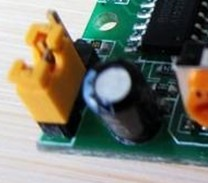
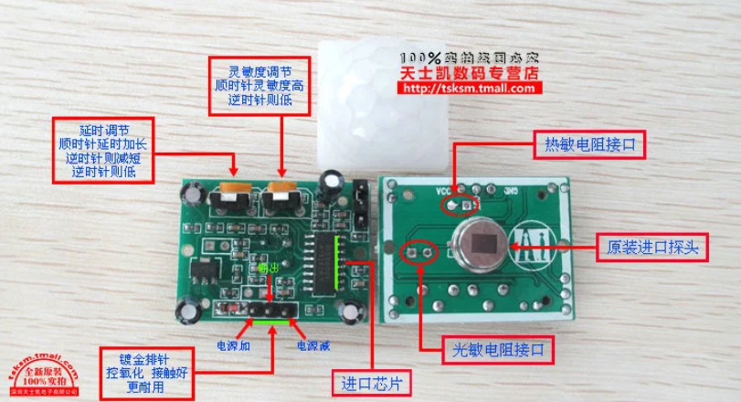

人体红外传感器(PIR)模块HC-SR501
工作原理：
人体都有恒定的体温，一般在37度，所以会发出特定波长10UM左右的红外线，被动式红外探头就是靠探测人体发射的10UM左右的红外线而进行工作的。人体发射的10UM左右的红外线通过菲泥尔滤光片增强后聚集到红外感应源上。红外感应源通常采用热释电元件，这种元件在接收到人体红外辐射温度发生变化时就会失去电荷平衡，向外释放电荷，后续电路经检测处理后就能产生报警信号。
热释电效应：
当一些晶体受热时，在晶体两端将会产生数量相等而符号相反的电荷。这种由于热变化而产生的电极化现象称为热释电效应。
菲涅耳透镜：
根据菲涅耳原理制成，菲涅耳透镜分为折射式和反射式两种形式，其作用一是聚焦作用，将热释的红外信号折射（反射）在PIR上；二是将检测区内分为若干个明区和暗区，使进入检测区的移动物体能以温度变化的形式在PIR上产生变化热释红外信号，这样PIR就能产生变化电信号。使热释电人体红外传感器(PIR)灵敏度大大增加。
模块参数：
1.工作电压：DC5V至20V
2.静态功耗：65微安
3.电平输出：高3.3V，低0V
4.延时时间：可调(0.3秒~18秒)
5.封锁时间：0.2秒
6.触发方式：L不可重复，H可重复，默认值为H(跳帽选择)
7.感应范围：小于120度锥角，7米以内
8.工作温度：-15~+70度
模块特性：
1、这种探头是以探测人体辐射为目标的。所以热释电元件对波长为10UM左右的红外辐射必须非常敏感。
2、为了仅仅对人体的红外辐射敏感，在它的辐射照面通常覆盖有特殊的菲泥尔滤光片，使环境的干扰受到明显的控制作用。
3、被动红外探头，其传感器包含两个互相串联或并联的热释电元。而且制成的两个电极化方向正好相反，环境背景辐射对两个热释元件几乎具有相同的作用，使其产生释电效应相互抵消，于是探测器无信号输出。
4、一旦人侵入探测区域内，人体红外辐射通过部分镜面聚焦，并被热释电元接收，但是两片热释电元接收到的热量不同，热释电也不同，不能抵消，经信号处理而报警。
5、菲泥尔滤光片根据性能要求不同，具有不同的焦距(感应距离)，从而产生不同的监控视场，视场越多，控制越严密。
触发方式：
L不可重复，H可重复。可跳线选择，默认为H。
A.不可重复触发方式：即感应输出高电平后，延时时间一结束，输出将自动从高电平变为低电平。
B.可重复触发方式： 即感应输出高电平后，在延时时间段内，如果有人体在其感应范围内活动，其输出将一直保持高电平，直到人离开后才延时将高电平变为低电平(感应模块检测到人体的每一次活动后会自动顺延一个延时时间段，并且以最后一次活动的时间为延时时间的起始点)。

可调封锁时间及检测距离调节：
1、封锁时间：感应模块在每一次感应输出后(高电平变为低电平)，可以紧跟着设置一个封锁时间，在此时间段内感应器不接收任何感应信号。此功能可以实现(感应输出时间和封锁时间)两者的间隔工作，可应用于间隔探测产品；同时此功能可有效抑制负载切换过程中产生的各种干扰。(默认封锁时间2.5S)
2、调节检测距离
_files/Image [1].jpg)
光敏控制：
模块预留有位置，可设置光敏控制，白天或光线强时不感应。光敏控制为可选功能,出厂时未安装光敏电阻。
_files/Image [2].jpg)
模块优缺点：
优点：
本身不发任何类型的辐射，器件功耗很小，隐蔽性好。价格低廉。
缺点：
容易受各种热源、光源干扰
被动红外穿透力差，人体的红外辐射容易被遮挡，不易被探头接收。
易受射频辐射的干扰。
环境温度和人体温度接近时，探测和灵敏度明显下降，有时造成短时失灵。
模块抗干扰：
1、防小动物干扰
2、防电磁干扰
3、防强灯光干扰
安装：
红外线热释电人体传感器只能安装在室内，其误报率与安装的位置和方式有极大的关系，正确的安装应满足下列条件：
1.红外线热释电传感器应离地面2.0-2.2米。
2.红外线热释电传感器远离空调, 冰箱，火炉等空气温度变化敏感的地方。
3.红外线热释电传感器探测范围内不得隔屏、家具、大型盆景或其他隔离物。
4.红外线热释电传感器不要直对窗口，否则窗外的热气流扰动和人员走动会引起误报，有条件的最好把窗帘拉上。红外线热释电传感器也不要安装在有强气流活动的地方。
红外线热释电传感器对人体的敏感程度还和人的运动方向关系很大。热释电红外传感器对于径向移动反应最不敏感, 而对于横切方向 (即与半径垂直的方向)移动则最为敏感. 在现场选择合适的安装位置是避免红外探头误报、求得最佳检测灵敏度极为重要的一环。

_files/Image [1].png)
采用中断方式和串口打印来测试：
连接：
CubeMX配置：
_files/Image [2].png)
记得打开这个
编写中断处理函数：